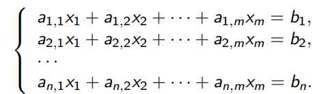
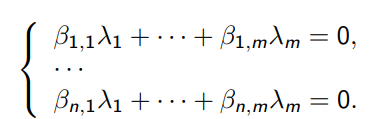

1. Делимость. Свойства. Теорема о делениии с остатком
Делимость
Определение
Пусть $a, b \in \Z, b \not = 0$. Тогда a делится на b (обозначение: $a , \vdots , b$) или, что то же самое, b делит a (обозначение: $b , | , a$), если $a = bc$, где $c \in \Z$.
Если $a , \vdots , b$, то b - делитель a.
Свойства
Свойство 1
Если $a , \vdots , b$ и $b , \vdots , c$, то $a , \vdots , c$
Доказательство
Тогда $a = kb$ и $b = nc$, где $k, n \in \Z$, откуда следует a = knc
Свойство 2
Пусть $a, b , \vdots , d$, а $x, y \in \Z$. Тогда $ax + by , \vdots , d$
Доказательство
Тогда a = kd и b = nd, где $k, n \in \Z$, откуда следует $ax + by = (kx + ny)d$.
Свойство 3
Пусть $a, d \in \N, a , \vdots , d$. Тогда $a \ge d$
Доказательство
Тогда a = kd, где $k \in \N$, откуда следует $a = kd \ge d$
Теорема о делении с остатком
Теорема
Пусть $a \in \Z, b \in \N$. Тогда существуют единственные такие $q, r \in \Z$, что $0 \le r \lt b$ и $a = bq + r$.
$\bullet$ Число r называется остатком от деления a на b.
Доказательство
Существование. Пусть q - такое целое число, что $bq \le a \lt b(q+1)$, а $r = a - bq$. Тогда $0 \le r \lt b$ (вычтем из всех трех частей первого неравенства bq)
Единственность. $\bullet$ Пусть $a = bq_1 + r_1 = bq_2 + r_2$, причем $0 \le r_1 \lt b$ и $0 \le r_2 \lt b$
$\bullet$ НУО $r_1 > r_2$. Тогда $0 < r_1 - r_2 < b$.
$\bullet$ С другой стороны, $r_1 - r_2 = b(q_2 - q_1) \gt b$. Противоречие
1. Линейное пространство. Свойства
Определение
Определение Пусть K — поле, V — множество, и определены операции \( + : V \times V \to V и \cdot : K \times V \to V \), удовлетворяющие следующим условиям.
- Ассоциативность сложения. \(\forall a, b, c \in V (a + b) + c = a + (b + c)\)
- Коммутативность сложения. \(\forall a, b \in V ; a + b = b + a\)
- Ноль. \( \exists 0 \in V \) такой, что \(\forall a \in V a + 0 = a\)
- Обратный элемент. \(\forall a \in V \exists − a \in V\) такой, что \(a + (−a) = 0\)
- Дистрибутивность. \(\forall \alpha, \beta \in K\) и \(\forall a \in V\) выполнено \((\alpha + \beta)a = \alpha a + \beta a\)
- Дистрибутивность. \(\forall α \in K и \forall a, b \in V\) выполнено \(\alpha(a + b) = \alpha a + \alpha b\)
- Ассоциативность умножения. \(\forall \alpha, \beta \in K\) и \(\forall a \in V\) выполнено \(\alpha(\beta a) = (\alpha \cdot \beta)a\)
- Умножение на 1. \(\forall a \in V\) выполнено \(1 \cdot a = a\)
Тогда мы будем говорить, что V — линейное пространство над полем K, а элементы V называть векторами.
- Как правило, мы будем обозначать векторы строчными латинскими буквами, а числа из поля — греческими.
- 0-вектор \((0 \in V)\) и \(0 \in K\) — разные нули, хоть мы и обозначаем их одинаково.
Для \(a, b \in V\) определим \(a − b := a + (−b)\).
Свойство 1
Ноль-вектор единственен
Доказательство.
Пусть есть два ноль-вектора: \(0_1\) \(0_2\). Тогда \(0_1 = 0_1 + 0_2 = 0_2\)
Свойство 2
Обратный вектор −a всегда единственен.
Доказательство
Пусть \(a_1\) и \(a_2\) — два обратных вектора к \(a \in V\). Тогда \(a_1 + a = a + a_2 = 0\), откуда \(a_1 = a_1 + (a + a_2) = (a_1 + a) + a_2 = a_2\).
Свойство 3
Для любого \(a \in V\) выполнено \(0 \cdot a = 0\) (слева 0-число, справа 0-вектор).
Доказательство
\( 0 \cdot a = (0 + 0) \cdot a = 0 \cdot a + 0 \cdot a\). Вычтем из левой и правой части \(0 \cdot a\) и получим то, что нужно.
Свойство 4
Для любого \(a \in V\) выполнено \(−a = (−1) \cdot a\)
Доказательство
- \( a + (−1) \cdot a = 1 \cdot a + (−1) \cdot a\) \(= (1 − 1) \cdot a = 0 \cdot a = 0\).
- По Свойству 2, обратный вектор единственен. Значит, \(−a = (−1) \cdot a \)
2. Линейное подпространство
Определение
Если \(U, V\) — линейные пространства над полем \(K\), \(U \subset V \), причем операции сложения и умножения в U и V одинаковы. Тогда U — линейное подпространство V, а V — линейное надпространство U.
Лемма 1
Пусть V — линейное пространство над полем (K, U \subset V), причем U замкнуто по сложению векторов и умножению на число (то есть, \(\forall \alpha \in K, \forall a, b \in U\) выполнено \(a + b \in U \) и \( \alpha a \in U\) ). Тогда U — линейное подпространство V (со сложением и умножением из V).
Доказательство
- При выполнении этих условий, $$ + : U \times U \to U и \dotsc : K \times U \to U$$
- Отметим, что для любого \(a \in U\) выполнено \(−a \in U\) и \(0 = a − a \in U\)
- Теперь несложно понять, U — линейное пространство над K со сложением и умножением из V (6 свойств из определения наследуются из V, существование 0-вектора и обратного элемента обосновано выше).
3. Линейная комбинация, линейная оболочка. Порождающая система векторов
Определения
Пусть V — линейное пространство над полем K.
- Пусть \(x_1, \dotsc , x_n \in V, \alpha_1, \dotsc , \alpha_n \in K\). Тогда \(\alpha_1x_1 + \dotsc + \alpha_nx_n\) — линейная комбинация векторов \(x_1, \dotsc , x_n\). Линейная комбинация называется нетривиальной, если не все \(\alpha_1, \dotsc , \alpha_n\) нули.
- Пусть \(M \subset V\). Линейная оболочка множества M — это множество Lin(M) всех линейных комбинаций векторов из M (с любым количеством векторов).
Определение
- Пусть V — линейное пространство над полем K и \(M \subset V\). Если Lin(M) = V, то M — порождающая система векторов пространства V.
- Пространство V называется конечно порожденным, если оно имеет конечную порождающую систему векторов.
- В основном, мы будем изучать конечно порожденные линейные пространства.
Свойство 1
Если \(M \subset V \), то и \(Lin(M) \subset V\)
Доказательство
Несложно проверить, что линейная комбинация векторов линейного пространства V всегда лежит в V.
Свойство 2
Для любого \(M \subset V, Lin(M) \) - линейное подпространство V.
Доказательство
- Достаточно проверить замкнутость по сложению и умножению.
- Пусть \(x_1, \dotsc , x_n \in M, \alpha_1, \dotsc , \alpha_n \in K\). Тогда \(\beta(\alpha_1x_1 + \dotsc + \alpha_nx_n) \) = \( (\beta\alpha_1)x_1 + \dotsc + (\beta\alpha_n)x_n \in Lin(M)\).
- Пусть, кроме того, \(\beta_1, \dotsc , \beta_n \in K\). Тогда \(\alpha_1x_1 + \dotsc + \alpha_nx_n + \beta_1x_1 + \dotsc + \beta_nx_n = \) \((\alpha_1 + \beta_1)x_1 + \dotsc + (\alpha_n + \beta_n)x_n \in Lin(M)\).
(Здесь достаточно проверить сложение линейных комбинаций одних и тех же векторов, так как в линейную комбинацию можно добавить отсутствующие в ней вектора с нулевыми коэффициентами.)
4. Линейно зависимые и линейно независимые системы векторов
Определения
Пусть V — линейное пространство над полем K.
- Вектора \( x_1, \dotsc , x_n \in V\) называются линейно зависимыми (коротко: ЛЗ), если существует их нетривиальная линейная комбинация, равная 0. (То есть, \(\alpha_1, \dotsc , \alpha_n \in K\) не все равны 0, а \(\alpha_1x_1 + \dotsc + \alpha_nx_n = 0\)) Если такой комбинации нет, то вектора \(x_1, \dotsc , x_n \in V\) называются линейно независимыми (коротко: ЛНЗ).
- Бесконечное множество векторов называется линейно зависимым, если из них можно составить нетривиальную линейную комбинацию, равную 0 и линейно независимым, если нельзя.
Свойство 0
Пусть V — линейное пространство над полем K, \(0 \in M \subset V\). Тогда множество векторов M ЛЗ.
Доказательство
Есть нетривиальная линейная комбинация 1 · 0 = 0.
Свойство 1
Если множество векторов ЛЗ, то любое его надмножество тоже ЛЗ.
Доказательство
Можно не использовать добавленные вектора в линейных комбинациях
Свойство 2
Если множество векторов ЛНЗ, то любое его подмножество тоже ЛНЗ.
Доказательство
Убрав некоторые вектора из множества, мы не добавим новых линейных комбинаций.
Свойство 3
Если \(x_1, \dotsc, x_n \in V\) ЛЗ, то среди них есть вектор, который является линейной комбинацией остальных.
Доказательство
- Пусть \(\alpha_1x_1 + \dotsc + \alpha_nx_n = 0 \), НУО \(\alpha_n \ne 0\).
- Тогда $$x_n = \frac{-\alpha_1}{\alpha_n}x_1 + \dotsc + \frac{-\alpha_{n-1}{\alpha_n}x_{n-1} \in Lin(x_1, \dotsc, x_{n-1})$$
Сверху формула не отображается
Свойство 4
Если \(x_1, \dotsc, x_n \in V\) ЛНЗ и \(y \notin Lin(x_1, \dotsc, x_n)\), то \(x_1, \dotsc, x_n \), y - ЛНЗ
Доказательство
- Пусть \(x_1, \dotsc , x_n \), y — ЛЗ. Тогда существует нетривиальная линейная комбинация $$\alpha_1x_1 + \dotsc + \alpha_nx_n + \beta y = 0$$
- Если \(\beta = 0\), то не все \(\alpha_1, \dotsc, \alpha_n \) равны 0 и \(\alpha_1x_1 + \dotsc + \alpha_nx_n = 0\), а значит, \(x_1, \dotsc , x_n\) ЛЗ, противоречие.
- Значит, \(\beta \ne 0 \). Тогда $$ y = \frac{-\alpha_1}{\beta}x_1 + \dotsc + \frac{-\alpha_n}{\beta}x_n \in Lin(x_1, \dotsc, x_n), $$ противоречие.
Свойство 5
Если \(x_1, \dotsc, x_n \in V \) ЛНЗ, а \(y \in V \) таков, что \(x_1, \dotsc, x_n\), y - ЛЗ, то \(y \in Lin(x_1, \dotsc, x_n\)
Доказательство
Прямое следствие Свойства 4
5. Однородные системы линейных уравнений
Определения
Пусть K - поле, \(a_{i,j} \in K\) (где \(i \in {1, \dotsc, n}, j \in {1, \dotsc, m}\)), \(b_1, \dotsc, b_n \in K\). Пусть \(x_1, \dotsc, x_m\) - неизвестные. Тогда Система линейных уравнений (далее СЛУ) - это  СЛУ называется однородной (далее ОСЛУ), если \(b_1 = \dotsc = b_n = 0\).
Элементраные преобразования СЛУ
- Поменять местами два уравнения.
- К одному уравнению прибавить другое, умноженное на \(\lambda \in K\)
- Умножить уравнение на \(\lambda \in K\), отличное от 0
- Везде умножение уравнения на число происходит вместе с правой частью
Определения
ОСЛУ приведена к ступенчатому виду, если каждое уравнение, имеющее ненулевые коэффициенты, имеет вид $$x_{s_i} + c_{i,s_i+1}x_{s_i+1} + \dotsc + c_{m,k}x_m = 0,$$ причем \(s_1 < s_2 < \dotsc < s_k\) (где k — наибольший номер уравнения, имеющего ненулевые коэффициенты).
Лемма 2
- Элементарные преобразования всех трех типов обратимы, то есть имеют обратные элементарные преобразования.
- Элементарные преобразования не меняют решений СЛУ.
Доказательство
-
- Элементарное преобразование типа (1) само себе обратно.
- Рассмотрим элементарное преобразование типа (2), пусть мы к i-му уравнению прибавили j-е, умноженное на \(\lambda\)
- Тогда обратное преобразование - прибавить к i-му уравнению j-е уравнение, умноженное на \(- \lambda \)
- Наконец, обратное преобразование к умножению уравнения на \(\lambda \ne 0\) - умножить его же на \(\lambda^{-1}\)
-
- Очевидно, элементарное преобразование системы оставляет все ее решения (все уравнения останутся верными)
- Так как такое преобразование обратимо, добавиться новые решения не могут - иначе проведем обратное преобразование, и все новые решения сохранятся.
Лемма 3
ОСЛУ можно привести элементарными преобразованиями к ступенчатому виду.
Доказательство
- Индукция по количеству неизвестных. База для одного неизвестного очевидна — наша система имеет вид \(ax_1 = 0\).
- Если \(a \ne 0\), то на a можно поделить и получить \(x_1 = 0\). Если же a = 0, система уже имеет ступенчатый вид Переход \
- Если все коэффициенты при \(x_1\) равны 0, то достаточно привести к ступенчатому виду систему без \(x_1\), что можно сделать по индукционному предположению.
- Если не все коэффициенты \(a_{i,1}\) равны 0, то переставим уравнения (с помощью элементарных преобразований типа (1)) так, чтобы \(a_{1,1} \ne 0\), после чего поделим первое уравнение на \(a_{1,1}\) — оно примет нужный нам вид \(x_1 + c_{1,2}x_2 + \dotsc + c_{1,m}x_m = 0\).
- Теперь для всех \(k \in {2, \dotsc, n} \) } вычтем из k уравнения новое первое уравнение, умноженное на \(a_{k,1}\) — во всех уравнениях, кроме первого, исчезнет переменная \(x_1\).
- Далее останется применить к системе из всех уравнений, кроме первого, индукционное предположение.
Лемма 4
ОСЛУ, в которой неизвестных больше, чем уравнений, имеет нетривиальное решение (не все \(x_i\) равны 0).
Доказательство
- Приведем систему к ступенчатому виду.
- Будем считать, что обозначения как в определении. Пусть осталось k уравнений с ненулевыми коэффициентами. Тогда \(s_1 < s_2 < \dotsc < s_k\) — не более чем n < m номеров переменных.
- Остались переменные с номерами не из \({s_1, \dotsc ,s_k}\). Положим все их равными 1.
- После чего последовательно вычислим: сначала \(x_{s_k}\), потом \(x_{s_{k−1}}\), и так далее, \(x_{s_1}\).
- Переменную \(x_{s_i}\) мы вычисляем из i уравнения: $$ x_{s_i} = −(c_{i,s_i+1}x_{s_i+1} + \dotsc + c_{i,m}x_m),$$ все значения в правой части уже известны.
6. Лемма о линейной зависимости линейных комбинаций
Лемма 5
Пусть V - линейное просранство над полем K, n < m, \(a_1, \dotsc, a_n \in V\) и \(y_1, \dotsc, y_m \in Lin(a_1, \dotsc, a_n)\) Тогда \(y_1, \dotsc, y_m\) ЛЗ
Доказательство
- Пусть \(y_1 = \beta_{1,1}a_1 + \dotsc + \beta_{n,1}a_n, \dotsc,\) \(y_m = \beta_{1,m}a_1 + \dotsc + \beta_{n,m}a_n\)
- Мы хотим найти такие \(\lambda_1, \dotsc, \lambda_m \in K\) (не все равные 0), что \(\lambda_1y_1 + \dotsc + \lambda_m y_m = 0\). Это означает, что \ \(0 = \lambda_1(\beta_{1,1}a_1 + \dotsc + \beta_{n,1}a_n) + \dotsc + \lambda_m(\beta_{1,m}a_1 + \dotsc + \beta_{n,m}a_n) =\) \((\beta_{1,1)\lambda_1 + \dotsc + \beta_{1,m}\lambda_m)a_1 + \dotsc + (\beta_{n,1}\lambda_1 + \dotsc + \beta_{n,m}\lambda_m)a_n\). \
- Для равенства нулю этого выражения достаточно, чтобы были равны 0 коэффициенты при
\(a_1, \dotsc, a_n\). Это дает нам ОСЛУ (относительно неизвестных \(\lambda_1, \dotsc, \lambda_m \)):
 - В этом ОСЛУ неизвестных больше, чем уравнений. Значит, она имеет нетривиальное решение - соответствующие \(\lambda_1, \dotsc, \lambda_m\) дают линейную зависимость \(y_1, \dotsc, y_m\)
7. Базис, размерность. Корректность определения размерности. Разложение по базису
Определение
- Базис линейного пространства — это линейно независимая порождающая система векторов.
- Размерность линейного пространства V (обозначение: dim(V)) — это количество элементов в базисе. Если пространство V имеет бесконечный базис, то dim(V) = \(\infty \).) Отдельно скажем о размерности пространства, состоящего из 0: dim({0}) = 0.
- Позже мы докажем существование базиса в конечно порожденном пространстве. А сейчас докажем корректность определения размерности.
Лемма 6
Размерность определена корректно, то есть, любые два базиса пространства V имеют одно и то же число элементов (любые два бесконечных базиса мы считаем равными по количеству элементов.)
Доказательство
- Пусть V имеет два базиса с разным числом векторов. Рассмотрим меньший из них — скажем, \(e_1, \dotsc, e_n \)
- Тогда все вектора большего базиса принадлежат \(V = Lin(e_1, \dotsc , e_n)\), а значит, больший базис ЛЗ по Лемме 5, противоречие.
Лемма 7
Пусть \(e_1, \dotsc, e_n \) - базис линейного пространство V. Тогда для любого \(x \in V\) существует единственное представление в виде линейной комбинации $$x = \alpha_1e_1 + \dotsc + \alpha_ne_n$$, где \(\alpha_1, \dotsc, \alpha_n \in K\).
Доказательство
- Так как базис является порождающей системой векторов, такое представление существует.
- Пусть есть два представления: $$x = \alpha_1e_1 + \dotsc + \alpha_ne_n = \beta_1e_1 + \dotsc + \beta_ne_n$$
- Тогда \((\alpha_1-\beta_1)e_1 + \dotsc +(\alpha_n - \beta_n)e_n = 0 \)
- Так как базис ЛНЗ, отсюда следует, что \(\alpha_1 - \beta_1 = \dotsc = \alpha_n - \beta_n = 0\), то есть два наших представления одинаковы.
8. Существование базиса в конечно порожденном пространстве
Теорема 1
Пусть V — конечно порожденное линейное пространство над полем K. Тогда V имеет базис. Более того, из любой конечной порождающей системы векторов V можно выделить базис.
Доказательство
- Пусть \( a_1, \dotsc , a_n \) — любая конечная порождающая система V (есть у конечно порожденного пространства).
- Если эти вектора ЛНЗ, то они — базис. Если же они ЛЗ, то по Свойству 3 ЛЗ векторов, один из них является линейной комбинацией остальных. Пусть, скажем, \( a_n = \beta_1a_1 + \dotsc + \beta_{n−1}a_{n−1}\).
- Докажем, что \(a_1, \dotsc , a_{n−1} \) — тоже порождающая система векторов V. Пусть \(x \in V\), тогда существует преставление \(x = \alpha_1a_1+ \dotsc +\alpha_na_n = \alpha_1a_1+ \dotsc +\alpha_{n−1}a_{n−1}+\alpha_n(\beta_1a_1+\dotsc+\beta_{n−1}a_{n−1}) \) \( = (\alpha_1 + \alpha_n\beta_1)a_1 + \dotsc + (\alpha_{n−1} + \alpha_n\beta_{n−1})a_{n−1}\).
- Таким образом, мы уменьшили порождающую систему на один вектор. Такие шаги не могут продолжаться бесконечно. Значит, в некоторый момент мы получим ЛНЗ порождающую систему векторов — то есть, базис
9. Дополнение до базиса линейно независимой системы в конечномерном пространстве
Теорема 2
Пусть V — конечно порожденное линейное пространство над полем K, а векторы \( a_1, \dotsc , a_n \) ЛНЗ. Тогда эти векторы можно дополнить до базиса
Доказательство
- Если \(a_1, \dotsc , a_n\) — порождающая система V, то это — базис.
- Иначе есть вектор \(a_{n+1} \in V\Lin(a_1, \dotsc , a_n)\).
- По свойству 4 ЛНЗ векторов, \(a_1, \dotsc , a_n, a_{n+1}\) ЛНЗ.
- Будем так действовать, пока это возможно.
- Пространство V имеет конечную порождающую систему — скажем, из m векторов. Тогда по Лемме 5 не существует множества более чем из m ЛНЗ векторов.
- Значит, наш процесс должен закончиться и в некоторый момент мы получим линейно независимую порождающую систему векторов — то есть, базис.
10. Три эквивалентных определения базиса
Теорема 3
Пусть V — конечно порожденное линейное пространство над полем K, a \(e_1, \dotsc , e_n \in V\). Тогда следующие три утверждения равносильны.
- \(e_1, \dotsc, e_n \) - базис V
- \(e_1, \dotsc, e_n \) - минимальная порождающая система векторов в V.
- \(e_1, \dotsc, e_n \) - максимальная ЛНЗ система векторов в V
Доказательство
\(1 \Rightarrow 2\). Если есть порождающая система \(f_1, \dotsc, f_m \) из m < n векторов, то \(e_1, \dotsc, e_n \in Lin(f_1, \dotsc, f_m)\) и по Лемме 5 вектора \(e_1, \dotsc, e_n \) ЛЗ, что не так.
\(2 \Rightarrow 1\). Пусть \(e_1, \dotsc, e_n \) - минимальная порождающая система векторов в V. По Теореме 1 из этих векторов можно выбрать базис, который также является порождающей системой векторов. Значит, в нем не может быть менее n векторов, то есть, \(e_1, \dotsc, e_n \) - базис.
\(1 \Rightarrow 3\). Если есть ЛНЗ система \(f_1, \dotsc , f_m\) из m > n векторов, то дополним ее до базиса (это можно сделать по Теореме 2). Тогда у V существуют два базиса с разным числом векторов (n и не менее чем m), что невозможно.
\(3 \Rightarrow 1\). Пусть \(e_1, \dotsc, e_n \) — максимальная ЛНЗ система векторов в V. Ее можно дополнить до базиса, который тоже является ЛНЗ системой векторов, а значит, не может иметь более n векторов. Следовательно, \(e_1, \dotsc, e_n \) — базис.
11. Сумма и пересечение линейных пространств
Определение
Пусть \( {U_i}{i \in I} \) — множество линейных подпространств линейного пространства V над полем K. Тогда \( \sum{i \in I} U_i \) — это множество всех сумм вида \( x_{i_1} + \dotsc + x_{i_n} \), где \( i_j \in I, x_{i_j} \in U_{i_j} \) для всех \( j \in {1, \dotsc , n}\) (число n не фиксировано).
- Другими словами, сумма линейных подпространств V — это множество всех конечных сумм элементов, взятых по одному из пространств, что мы складываем.
Лемма 8
Пусть \({U_i}{i \in I} \) — множество линейных подпространств линейного пространства V над полем K. Тогда \(U = \cap{i \ in I} U_i \) — тоже линейное подпространство V.
Доказательство
- Достаточно проверить замкнутость по сложению и умножению на число.
- Пусть \(a, b \in U\). Тогда для всех \(i \in I\) мы имеем \(a, b \in U_i\).
- Следовательно, для всех \(i \in I\) мы имеем \(a + b \in U_i\), откуда следует, что \(a + b \in U\).
- Пусть \(\lambda \in K\). Тогда для всех \(i \in I\) мы имеем \(\lambda a \in U_i\), откуда следует, что \(\lambda a \in U\).
Лемма 9
Пусть \({U_i}{i \in I}\) — множество линейных подпространств линейного пространства V над полем K. Тогда \(U = \sum{i \in I} U_i \) — тоже линейное подпространство V.
Доказательство
- Достаточно проверить замкнутость по сложению и умножению на число.
- Пусть \(a, b \in U \). Тогда существуют представления $$a = a_{i_1} + \dotsc + a_{i_n}, b = b_{i_1} + \dotsc + b_{i_n},$$ где \(i_1, \dotsc, i_n \in I, a_{i_j}, b_{i_j} \in U_{i_j} \) для всех \(j \in {1, \dotsc, n}\) (индексы в суммах для a и b можно считать одинаковыми: при необходимости можно дополнить суммы нулевыми слагаемыми).
- Тогда \(a_{i_j} + b_{i_j} \in U_{i_j}\) для всех \(j \in {1, \dotsc, n}\), откуда следует, что \(a + b = (a_{i_1} + b_{i_1}) + \dotsc + (a_{i_n} + b_{i_n}) \in U\).
- Пусть \(\lambda \in K\). Тогда \(\lambda a_{i_j} \in U_{i_j} \) для всех \(j \in {1, \dotsc, n}\), откуда следует, что \(\lambda a = \lambda a_{i_1} + \dotsc + \lambda a_{i_n} \in U \).
12. Размерность суммы двух линейных пространств
Теорема 4
Пусть U, W — конечномерные линейные подпространства линейного пространства V над полем K. Тогда \( dim(U + W) = dim(U) + dim(W) − dim(U \cap W)\).
Доказательство
- Пусть \(v_1, \dotsc, v_k\) - базис \(U \cap W\). Дополним его до базиса \(U: v_1, \dotsc, v_k, u_1, \dotsc, u_n\).
- Также дополним базис \(U \cap W\) до базиса \(W: v_1, \dotsc, v_k, w_1, \dotsc, w_m\)
- Тогда \(dim(U) = k + n, dim(W) = k + m, dim(U \cap W) = k\)
- Нам нужно доказать, что \(dim(U+W) = k + m + n\), для чего достаточно доказать, что \(v_1, \dotsc, v_k, u_1, \dotsc, u_n, w_1, \dotsc, w_m \) - базис \(U+W\)
Утверждение 1
\(v_1, \dotsc, v_k, u_1, \dotsc, u_n, w_1, \dotsc, w_m \) - порождающая система векторов \(U+W\)
Доказательство
- Пусть \(v \in U + W\), тогда \(v = u + w\), где \(u \in U, w \in W\). Тогда существуют представления \(u = \alpha_1 v_1 + \dotsc + \alpha_k v_k + \beta_1 u_1 + \dotsc + \beta_n u_n\), \(w = \alpha^'_1 v_1 + \dotsc + \alpha^'_k v_k + \gamma_1 w_1 + \dotsc + \gamma_m w_m\), где \(\alpha_1, \alpha_1^', \dotsc, \alpha_k, \alpha_k^', \beta_1, \dotsc, \beta_n, \gamma_1, \dotsc, \gamma_m \in K\).
- Тогда \(v = u + w = (\alpha_1 + \alpha_1^') v_1 + \dotsc + (\alpha_k + \alpha_k^') v_k +\) \(\beta_1 u_1 + \dotsc + \beta_n u_n + \gamma_1 w_1 + \dotsc + \gamma_m w_m\) - искомое представление.
Утверждение 2
\(v_1, \dotsc, v_k, u_1, \dotsc, u_n, w_1, \dotsc, w_m\) ЛНЗ.
Доказательство
- Предположим, что \(\alpha_1 v_1 + \dotsc + \alpha_k v_k + \beta_1 u_1 + \dotsc + \beta_n u_n + \gamma_1 w_1 + \dotsc + \gamma_m w_m = 0\)
- Нам нужно доказать, что все коэффициенты в этом представлении равны 0. Перепишем его в виде \ \(\alpha_1 v_1 + \dotsc + \alpha_k v_k + \beta_1 u_1 + \dotsc + \beta_n u_n = x =\) \(- \gamma_1 w_1 - \dotsc - \gamma_m w_m. (1)\) \
- Тогда \(x \in U\) (так как это линейная комбинация базисных векторов U) и \(x \in W \) (так как это линейная комбинация базисных векторов W). Следовательно, \(x \in U \cap W \).
- Значит, можно разложить x по базису \(U \cap W\): $$x = \lambda_1 v_1 + \dotsc + \lambda_k v_k. (2)$$
- Но (1) и (2) - два разложения x по базису U, а такое разложение единственно. Значит, \(\beta_1 = \dotsc = \beta_n = 0 \)
- Теперь можно переписать (1) в виде $$\alpha_1 v_1 + \dotsc + \alpha_k v_k = x = -\gamma_1 w_1 - \dotsc - \gamma_m w_m. (3)$$
- Это два разложения x по базису W, но такое разложение также единственно. Следовательно, \(\alpha_1 = \dotsc = \alpha_k = \gamma_1 = \dotsc = \gamma_m = 0\), что и требовалось доказать.
- Из Утверждений 1 и 2 немедленно следует, что \(v_1, \dotsc, v_k, u_1, \dotsc, u_n, w_1, \dotsc, w_m\) - базис U + W.
- Теорема доказана
13. Прямая сумма. Свойства
Определение
Пусть \({U_i}{i \ in I}\) - множество линейных подпространств линейного пространства V над полем \(K, U = \sum{i \ in I} U_i \)
- Тогда U - прямая сумма, если из \(x_{i_1} + \dotsc + x_{i_n} = 0\) (где \(i_1, \dotsc, i_n \in I\) - различные индексы, \( x_{i_j} \in U_{i_j}\) для всех \(j \in {1, \dotsc, n}\)) следует, что \(x_{i_1} = \dotsc = x_{i_n} = 0 \)
- Обозначение \(U = \oplus_{i \in I} U_i\)
Свойство
Пусть \(U = \oplus_{i \in I} U_i, x \in U, x \ne 0.\) Тогда существует единственное представление вида \(x = x_{i_1} + \dotsc + x_{i_n}\), где \(i_1, \dotsc, i_n \in I \) - различные индексы, \(x_{i_j} \in U_{i_j}\) и \(x_{i_j} \ne 0 \) для всех \(j \in {1, \dotsc, n}.\)
Доказательство
- Существование такого представления следует из определения суммы линейных пространств.
- Предположим, что есть два таких представления. Дополним их нулями так, чтобы суммировались элементы одних и тех же подпространств: $$x = x_{i_1} + \dotsc + x_{i_n} = x^'{i_1} + \dotsc + x{i_n}^' $$
- Тогда \(0 = (x_{i_1} - x^'{i_1}) + \dotsc + (x{i_n} - x^'_{i_n}) \)
- По определению прямой суммы, все слагаемые равны 0. Значит, \(x_{i_1} = x^'{i_1}, \dotsc, x{i_n} = x_{i_n}^'\), то есть, наши представления совпадают.
14. Критерий прямой суммы
Теорема 5
Пусть \({U_i}{i\in I}\) - множество линейных подпространств линейного пространства V над полем \(K, U = \sum{i \in I} U_i \). Для каждого \( i \in I\) пусть \(U_i^' = \sum_{j \ in I, j \ne i} U_j \)j (сумма всех подпространств, кроме \(U_i\)). Тогда \(U = \oplus_{i \in I} U_i \), если и только если \(U_i \cap U_i^' = {0} \) для каждого \(i \in I\).
Доказательство
\(\Rightarrow\)
- Предположим, что \(x \in U_i \cap U_i^', x \ne 0 \) для некоторого \(i \in I\)
- Из \(x \in U_i^'\) следует, что существует представление \(x = x_{j_1} + \dotsc + x_{j_n}\), где \(x_{j_s} \in U_{j_s}, j_s \ne i\) для всех \(s \in {1, \dotsc, n} \).
- Тогда \(-x \in U_i\) и \(0 = (-x) + x_{j_1} + \dotsc + x_{j_n}\) - представление, которого не может быть по определению прямой суммы, противоречие. \(\Leftarrow\)
- Предположим, что U - не прямая сумма.
- Тогда существует представление \(0 = x_{j_1} + \dotsc + x_{j_n} \), где \(x_{j_s} \in U_{j_s}, x_{j_s} \ne 0 \) для всех \(s \in {1, \dotsc, n}\)
- Тогда \(-x_{j_1} = x_{j_2} + \dotsc + x_{j_n} \in U_{j_1}^'\), но при этом, очевидно, \(-x_{j_1} \in U_{j_1}\). Таким образом, \(U_{j_1} \cap U_{j_1}^' \ne {0} \), противоречие
15. Размерность и базис прямой суммы конечного числа пространств
Теорема 6
Пусть \(U_1, \dotsc, U_n\) - линейное продпространства конечномерного линейного пространства V над полем K, а \(U = \oplus^n_{i = 1}U_i \). Тогда \(dim(U)=dim(U_1) + \dotsc + dim(U_n)\)
Доказательство
- Индукция по n База n = 2. В этом случае \(U = U_1 \oplus U_2\) и \(U^'_1 = U_2\). По критерию прямой суммы, \(U_1 \cap U_2 = {0}\), следовательно, \(dim(U_1 \cap U_2) = 0\) и \(dim(U_1 \oplus U_2) = dim(U_1) + dim(U_2) \) Переход \(n - 1 \to n\)
- Пусть \(W = U^'n = U_1 + \dotsc + U{n-1}\) Докажем, что сумма из определения W прямая
- Для всех \(i \in {1, \dotsc, n-1}\) определим \(W^'i = \sum{1 \leq j \leq n-1, j \ne i} U_j \) Тогда \(W^'_i \subset U^'_i\)
- По Теореме 5, из \(W^'_i \cap U_i \subset U^'_i \cap U_i = {0}\) следует, что W - прямая сумма
- Следовательно, \(dim(W) - dim(U_1) + \dotsc + dim(U_{n-1}) \)
- Так как \(W \cap U_n = U^'n \cap U_n = {0}\), сумма \(U = W + U_n\) также прямая. Следовательно, \(dim(U) = dim(W) + dim(U_n)\) \(= dim(U_1) + \dotsc + dim(U{n-1}) + dim(U_n)\) , что нам и нужно
Следствие 1
Пусть \(U_1, \dotsc, U_n\) - линейные подпространства конечномерного линейного пространства V над полем K, а \(U = \oplus^k_{i=1} U_i\). Для каждого \(i \in {1, \dotsc, k}\) пусть \(e_1^i, \dotsc, e_{n_i}^i \) - базис \(U_i\). Тогда \(e_1^1, \dotsc, e^1_{n_1}, \dotsc, e^k_1, \dotsc, e^k_{n_k}\) - базис U.
Доказательство
- Докажем, что \(e_1^1, \dotsc, e^1_{n_1}, \dotsc, e^k_1, \dotsc, e^k_{n_k}\) - порождающая система векторов U.
- Любой вектор \(x \in U \) представим в виде \(x = x_1 + \dotsc + x_k\), где \(x_i \in U_i \), для любого \(i \in {1, \dotsc, k}\)
- Вектор \(x_i \in U_i\) можно разложить по базису \(U_i:x_i = \sum^{n_i}_{j=1}\alpha_j^ie^i_j\)
- Тогда \(x = \sum^k_{i=1}(\sum^{n_i)_{j=1}\alpha^i_je^i_j)\) - искомое представление.
- Из любой порождающей системы векторов по Теореме 1 можно извлечь базис. Но количество векторов в базисе равно \(dim(U) = dim(U_1) + \dotsc + dim(U_k)\) - а именно столько векторов у нас и есть. Значит, наша система векторов и есть базис U
16. Аффинные подпространства. Свойства
Определение
Пусть U — линейное подпространство линейного пространства V над полем K, \(a \in V\). Тогда \(U + a = {x + a : x \in U}\) — аффинное подпространство V. Положим dim(U + a) := dim(U).
- Таким образом, аффинное подпространство — это сдвиг линейного подпространства на вектор.
- Простейший пример, показывающий что это такое. Пусть \(V = R^2\) — стандартная евклидова плоскость. Тогда линейные подпространства V размерности 1 — это прямые, проходящие через 0, а аффинные подпространства — это все прямые.
- Здесь и далее U — линейное подпространство линейного пространства V над полем \(K, a, b \in V\).
Свойство 1
U + a = U + b, если и только если \(a − b \in U\).
Доказательство
\(\Rightarrow\) Если U + a = U + b, то \(a \in U + b\). Так как
a = b + (a − b), то \(a − b \in U\).
\(\Leftarrow \)
- Пусть \(a-b \in U\), а \(x \ in U + a\). Тогда существует такое \(u \in U\), что x = a + u
- Но \((a − b) + u \in U\) (линейное подпространство замкнуто по сложению), значит, \(x = a + u = b + (a − b + u) \in U + b\). Таким образом, \(U + a \subset U + b\).
- Так как \(b − a \in U\), аналогично получается, что \(U + b \subset U + a\)
Свойство 2
Пусть \(\lambda_1, \dotsc, \lambda_n \in K, \lambda_1 + \dotsc + \lambda_n = 1, x_1, \dotsc, x_n \in U + a\). Тогда \(\lambda_1x_1 + \dotsc + \lambda_nx_n \in U+a \)
Доказательство
- Пусть \(x_i = u_i + a\), где \(u_i \in U\) для всех \( i \in {1, \dotsc , n}\).
- Тогда \(u = \lambda_1u_1 + \dotsc + \lambda_nu_n \in U\) и \(\lambda_1x_1 + \dotsc + \lambda_nx_n = \lambda_1(u_1 + a) + \dotsc + \lambda_n(u_n + a) = \) \((\lambda_1u_1 + \dotsc + \lambda_nu_n) + (\lambda_1 + \dotsc + \lambda_n)a = u + a \in U + a\)
Свойство 3
Пусть \(W \subset V\) таково, что для любых \(w_1,w_2,w_3 \in W\) и таких \(\lambda_1, \lambda_2, \lambda_3 \in K\), что \(\lambda_1 + \lambda_2 + \lambda_3 = 1\), выполнено \( \lambda_1w_1 + \lambda_2w_2 + \lambda_3w_3 \in W \) . Тогда W — аффинное подпространство V.
Доказательство
- Зафиксируем \(a \in W\). Докажем, что U = W − a — линейное подпространство V. Для этого достаточно проверить замкнутость U по сложению векторов и умножению вектора на число.
- Пусть \( x_1, x_2 \in U\). Тогда \(x_1 = w_1 - a, x_2 = w_2 - a\), где \(w_1, w_2 \in W \) и $$x_1 + x_2 \in U \Longleftrightarrow (w_1 - a) + (w_2 - a) \in U \Longleftrightarrow$$ $$(w_1 - a) + (w_2 - a) + a \in W \Longleftrightarrow w_1 + w_2 -a \in W (1)$$
- Последнее утверждение в (1) верно: пусть \(w_3 = a\), \(\lambda_1 = \lambda_2 = 1, \lambda_3 = -1\), тогда по условию \(1 \cdot 2_1 + 1 \cdot w_2 + (-1) \ cdot a \in W \)
- Пусть \(\lambda \in K\). Тогда $$\lambda x_1 \in U \Leftrightarrow \lambda(w_1 - a) \in U \Leftrightarrow \lambda(w_1-a)+a \in W \Leftrightarrow$$ $$\lambda w_1 + (1 - \lambda)a \in W (2)$$
- Последнее утверждение в (2) верно: пусть \(w_2 = w_3 = a\), \(\lambda_1 = \lambda, \lambda_2 = 1 - \lambda ; \lambda_3 = 0 \), тогда по условию \(\lambda w_1 + (1-\lambda)a \in W \)
- Следовательно, U - линейное подпространство V, а W = U + a - аффинное подпространство
17. Факторпространство и его размерность
Определение
Пусть U — линейное подпространство линейного пространства V над полем K.
- Факторпространство \(V/U = {U+a : a \in V}\)
- Будем использовать обозначение \(\overline{a} := U + a \)
- Сложение и умножение в V/U определим так: $$\overline{a} + \overline{b} := \overline{a+b}; \lambda \overline{a} := \overline{\lambda a}$$
- Введем отношение \(a \sim b \Longleftrightarrow a - b \in U \)
- Несложно проверить, что \(\sim b \) на V, означающее, что a + U = b + U
- По доказанному ранее, что \(a \sim b \Longleftrightarrow a-b \in U \)
- Несложно проверить, что \(\sim\) - отношение эквивалентности, а классы эквивалентности - как раз аффинные подпространства вида a + U
Лемма 10
- Сложение и умножение в V/U определены корректно
- V/U с эими операциями является линейным пространством над полем K
Доказательство
-
- Пусть \(\overline{a} = \overline{a^'}, \lambda \in K \). Тогда \(a - a^' \in U\)
- Для обоснования коректности сложения нам нужно доказать: $$\overline{a+b} = \overline{a^' + b} \Longleftrightarrow (a+b) - (a^' + b) = a - a^' \in U$$
- Доказательство того, что от замены b на \(b^' \sim \)результат не изменится, аналогично.
- Для обоснования коректности умножения нам нужно доказать: $$\overline{\lambda a} = \overline{\lambda a^'} \Longleftrightarrow \lambda a - \lambda a^' = \lambda(a-a^') \in U $$
- Ассоциативность и коммутативность сложения, обе
дистрибутивности, ассоциативность умножения, умножение
на 1 напрямую следуют из аналогичных свойств в V.
- Класс \(\overline{0} = 0 + U = U\) очевидно подходит в качестве 0-вектора.
- Обратный вектор определяется как \(−\overline{a} := \overline{−a}\), что несложно проверить.
Теорема 7
Пусть U — линейное подпространство конечномерного линейного пространства V над полем K. Тогда dim(V/U) = dim(V) − dim(U).
Доказательство
todo